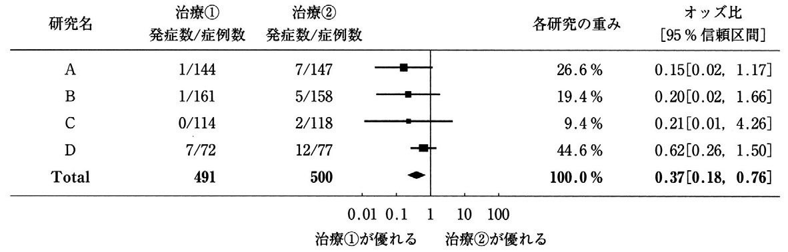

| 選択肢 | 解説 |
|---|---|
| ａ 感 度 | 誤り。感度は検査法の性能を表す指標（真に病気がある人のうち検査が陽性になる割合）で、曝露群と非曝露群の罹患率を比較する指標ではない。診断学の指標と疫学の指標を混同させる典型的な誤答肢。 |
| ｂ 特異度 | 誤り。特異度も検査法の性能を表す指標（真に病気がない人のうち検査が陰性になる割合）で、罹患率の比とは無関係。感度・特異度はいずれも「検査の当たり外れ」を測る指標であり、「曝露と疾病の関連」を測る本問の趣旨とは土俵が異なる。 |
| ｃ 信頼区間 | 誤り。信頼区間は推定値（相対危険度やオッズ比などの点推定値）のばらつきの幅を示す統計学的な区間であり、それ自体が「罹患率の比」という指標ではない。相対危険度に「95％信頼区間」を付けて報告することはあるが、信頼区間そのものは罹患率の比の定義ではない。 |
| ｄ 寄与危険度 | 誤り。寄与危険度は曝露群と非曝露群の罹患率の"差"（引き算）であり、"比"（割り算）ではない——設問文の「比」という一語を見落とすとこの肢に流れる、本章で最も頻出のひっかけ。 |
| ◯ ｅ 相対危険度 | ◯ 正しい。相対危険度（リスク比）は曝露群の罹患率÷非曝露群の罹患率という"比"で定義され、曝露が疾病のリスクを何倍に高めるかを直接表す。正答率92％と高く、「相対"危険度"＝比、寄与"危険度"＝差」という対比を押さえていれば即答できる基本問題。 |
| 指標 | 計算式 | 意味 |
|---|---|---|
| 相対危険度（リスク比） | Ir／Io（比） | 曝露群は非曝露群の何倍のリスクか |
| 寄与危険度 | Ir－Io（差） | 曝露によって実数でどれだけ罹患率が上乗せされたか |
| 寄与危険割合 | （Ir－Io）／Ir（割合） | 曝露群の罹患のうち曝露が原因の割合 |
| 人口寄与危険度割合 | （It－Io）／It（割合） | 集団全体の罹患のうち曝露が原因の割合 |
| 選択肢 | 解説 |
|---|---|
| ａ ① | 誤り。①「夕食後しばらくしてからの右上腹部痛」は、食事（とくに脂肪分）が胆嚢を収縮させて発症の引き金になる胆道系疾患（急性胆嚢炎・胆管炎）に典型的な発症パターンであり、診断に直接寄与する重要な情報。 |
| ｂ ② | 誤り。②「市販薬を服用しても改善せず、翌朝も痛みと発熱が持続」は、単純な胆石発作（数時間で自然軽快することが多い）ではなく、急性胆嚢炎・胆管炎への進行を示唆する経過であり、重症度・緊急性の判断に直接関わる。 |
| ｃ ③ | 誤り。③「右肩への放散痛を認めない」という陰性所見も、胆嚢炎に典型的な関連痛（右肩甲部への放散）の有無を確認したうえでの記載であり、症状の完成度・非典型例の可能性を評価するための診断的な情報として意味を持つ。 |
| ｄ ④ | 誤り。④「胆石症の既往はあるが胆石発作歴はない」は、既知の胆石が今回のRUQ痛・発熱・黄疸の原因（胆管への嵌頓や胆嚢炎への進展）である可能性を検討するうえで直接関係する既往歴。 |
| ◯ ｅ ⑤ | ◯ 正しい。⑤「インフルエンザワクチン・新型コロナワクチンの接種歴」は、右上腹部痛・発熱・黄疸という今回の主訴（急性胆嚢炎ないし胆管炎を疑う病態）の診断に直接結びつく情報ではない——ワクチン接種歴は一般的な予防医療の把握として問診票に含まれることはあるが、本症例の腹部症状の鑑別診断を進めるうえでは寄与しない。医療面接では聞き取った情報のすべてが今回の主訴の診断に直結するわけではなく、「網羅的に聴取する項目」と「今回の診断に直接効く項目」を区別する視点が問われている。 |
| 選択肢 | 解説 |
|---|---|
| ◯ ａ 診療ガイドライン | ◯ 正しい。診療ガイドラインはシステマティックレビューによって系統的に収集・吟味された複数の研究結果を統合し、専門家が推奨度を付けて作成した文書であり、根拠の質・量ともに最も体系立った情報源——個々の医師の経験や単発の報告よりも、多数の研究を俯瞰した推奨に基づいて方針を判断するのがEBM（根拠に基づいた医療）の基本姿勢である。 |
| ｂ 他の患者の体験記 | 誤り。体験記は個人の主観的な経験の記述であり、対照群も統計的な検証もない——エビデンスの階層の中では最も根拠の弱い部類に属する。 |
| ｃ 研究会での症例報告 | 誤り。症例報告（ケースレポート）は1例または少数例の記述にとどまり、対照群との比較がないため因果関係を検証する力が弱い——仮説を生む段階の情報としては有用だが、治療方針の決定根拠としては不十分。 |
| ｄ 最新の単施設研究の論文 | 誤り。単一施設の研究は症例数が限られ、その施設固有の患者背景や診療体制に結果が左右されやすく、外的妥当性（他の集団への一般化可能性）に限界がある。「最新」という言葉に引かれやすいが、複数の研究を統合した診療ガイドラインの推奨より根拠として弱い。 |
| ｅ 医師が発信するソーシャル・メディア | 誤り。SNS等での発信は査読（peer review）を経ておらず、発言の医学的な正確性が担保されていない——情報源としての信頼性は最も低い。 |
| 情報源 | 特徴 |
|---|---|
| 体験記・SNS発信 | 個人の主観・査読なし。根拠は最弱 |
| 症例報告・症例集積研究 | 少数例の記述。対照群なし |
| 症例対照研究・コホート研究 | 対照群あり。観察研究 |
| ランダム化比較試験〈RCT〉 | 介入研究。内的妥当性が高い |
| メタ分析・システマティックレビュー | 複数のRCTを統合 |
| 診療ガイドライン | 統合された根拠に推奨度を付与 |
| 選択肢 | 解説 |
|---|---|
| ａ 観察研究は対象とならない。 | 誤り。メタ分析はRCTだけでなく、コホート研究・症例対照研究などの観察研究を対象に行うこともできる——「介入研究にしか使えない」という思い込みが誤答を誘う。 |
| ｂ 小規模な研究の結果は反映されない。 | 誤り。メタ分析は小規模な研究も含めて複数の研究結果を統合することで、単独では検出力が不足する小規模研究の結果にも意味を持たせる——むしろ小規模研究を"活かす"手法である。 |
| ｃ 結果はファンネルプロットで提示される。 | 誤り。メタ分析の統合結果を提示する図はフォレストプロット（森林図）である——ファンネルプロット（漏斗プロット）は出版バイアスの有無を検討するための別の図で、結果の提示そのものではない。 |
| ｄ 出版バイアスを制御するための方法である。 | 誤り。出版バイアス（有意差の出た研究ばかりが発表され、有意差の出なかった研究が埋もれる偏り）はメタ分析の限界・注意点であって、メタ分析自体が出版バイアスを"制御する"ための手法ではない——出版バイアスの検出にはファンネルプロットなどを用いる。 |
| ◯ ｅ 複数の研究の結果を統合するための方法である。 | ◯ 正しい。メタ分析は同じテーマを扱った複数の研究の結果（疫学指標）を統計的手法で統合し、1つのまとめられた指標として示す手法である——正答率95％と高く、メタ分析の最も基本的な定義を問う設問。 |
| 図 | 示すもの | 横軸 |
|---|---|---|
| フォレストプロット（森林図） | 各研究の効果推定値と統合結果 | オッズ比・リスク比など（対数目盛が多い） |
| ファンネルプロット（漏斗プロット） | 出版バイアスの有無（左右対称かどうか） | 効果推定値、縦軸に精度・症例数 |
| 選択肢 | 解説 |
|---|---|
| ａ 臨床試験を中止する。 | 誤り。1例の有害事象（薬疹）が生じたことをもって試験全体を中止する必要はない——安全性委員会等が重篤性・頻度を評価し、試験計画・プロトコールに沿って個別に対応する。 |
| ｂ 新たな対象者を補完する。 | 誤り。本症例では患者登録がすでに終了しており、新たな対象者を追加で組み入れることはできない——脱落者が出るたびに補充すると、ランダム割付の前提（登録時点で決まった集団を追跡する）が崩れる。 |
| ｃ この患者から得られたデータは処分する。 | 誤り。休薬した患者のデータを処分（除外）してはならない——除外するとランダム割付によって均等化されたはずの群間の背景因子のバランスが崩れ、結果に偏りが生じる。 |
| ｄ 試験終了後も使用された薬は患者に非開示とする。 | 誤り。二重盲検化は試験の実施期間中に割付情報を隠す手続きであり、試験終了後（または安全性上必要な場合）には割付を解除（アンブラインド）し、有害事象への対応や患者への説明のために使用薬剤を開示するのが原則。 |
| ◯ ｅ この患者のデータは割り付けられた群のまま取り扱う。 | ◯ 正しい。ランダム化比較試験の解析原則であるIntention to treat〈ITT〉解析では、実際に治療を継続できたかどうかにかかわらず、最初に割り付けられた群のままデータを解析する——薬疹で休薬した本患者も、割り付けられた新薬群（または対照群）のデータとしてそのまま解析に含める。これによりランダム割付が保証する群間の背景因子の均一性を最後まで崩さずに解析できる。 |
| 手続き | ITT・RCTの原則に照らして |
|---|---|
| 試験を中止する | 1例の有害事象で試験全体を止める必要はない（安全性の評価に基づき個別判断） |
| 対象者を補完する | 登録終了後の追加組み入れは行わない |
| データを処分する | 除外するとITTの原則に反し群間の均一性が崩れる |
| 使用薬を非開示のまま | 安全性対応・試験終了後はアンブラインドして開示する |
| 割り付けられた群のまま扱う | ◯ ITT解析の原則そのもの |
| 選択肢 | 解説 |
|---|---|
| ａ ワクチン接種を普及すること。 | 誤り。ワクチン接種の普及は予防接種行政の目的であり、積極的疫学調査そのものの目的ではない。 |
| ｂ 感染症の新たな治療薬を開発すること。 | 誤り。新薬開発は治験・臨床研究の領域であり、感染症の発生時に感染経路を調べる積極的疫学調査とは目的が異なる。 |
| ｃ 個々の症例の診断を迅速に確定すること。 | 誤り。積極的疫学調査は個々の患者の診断確定（臨床的な診療行為）そのものではなく、集団としての感染拡大を防ぐための公衆衛生上の調査である——個別診断は医療機関の役割で、調査の主目的とは焦点が異なる。 |
| ｄ 医療機関における医療費の削減を図ること。 | 誤り。医療費の削減は積極的疫学調査の目的として想定されていない——調査の主眼はあくまで感染拡大の防止にある。 |
| ◯ ｅ 感染者拡大阻止のために感染経路を特定すること。 | ◯ 正しい。積極的疫学調査は、感染症（食中毒等の集団発生を含む）が発生した際に保健所等が行う調査で、感染源・感染経路を特定し、さらなる感染拡大を防止することを目的とする——感染症法に基づき、都道府県知事等が必要と認めるときに実施される。 |
| プログラム | 参加する一人あたりの費用 | 参加した人が禁煙に成功する割合 | 禁煙成功者一人あたりの費用 |
|---|---|---|---|
| ａ | 80,000円 | 80％ | 100,000円 |
| ｂ | 70,000円 | 90％ | 77,778円 |
| ｃ | 50,000円 | 45％ | 111,111円 |
| ｄ | 30,000円 | 50％ | 60,000円 |
| ｅ | 20,000円 | 25％ | 80,000円 |
| 選択肢 | 解説 |
|---|---|
| ａ プログラムａ | 誤り。禁煙成功者一人あたりの費用は100,000円で、5つのプログラムの中では最も高額——費用対効果は最も低い部類に入る。参加一人あたりの費用（80,000円）は突出して高くはないが、成功率が80％と高くても、成功者一人を生み出すのに要する総コストは割高になる。 |
| ｂ プログラムｂ | 誤り。禁煙成功者一人あたりの費用は77,778円で、参加費用（70,000円）・成功率（90％）ともに悪くないが、成功者一人あたりの費用で比べるとｄには及ばない。 |
| ｃ プログラムｃ | 誤り。禁煙成功者一人あたりの費用は111,111円と5プログラム中で最も高い——参加費用は中程度（50,000円）だが成功率が45％と低いため、割高になる典型例。「参加費用が安いから効率的」とは限らないことを示す肢。 |
| ◯ ｄ プログラムｄ | ◯ 正しい。禁煙成功者一人あたりの費用は60,000円で5プログラム中最も低く、投じた費用に対して最も多くの禁煙成功者を生み出している——これが費用対効果（cost-effectiveness）の高さを意味する。参加費用そのものは30,000円と2番目に安く、成功率も50％と中程度だが、この2つの掛け合わせ（費用÷成功率）が最も効率的な組合せになっている。 |
| ｅ プログラムｅ | 誤り。参加費用は20,000円と最も安いが、成功率が25％と最も低いため、禁煙成功者一人あたりの費用は80,000円まで跳ね上がる——「安いプログラムを選べば効率的」という直感の誤りを突く典型的な誤答肢。 |
| 介入群 | 対照群 | Ｐ値 | |
|---|---|---|---|
| 対象者数 | 120人 | 120人 | |
| 3日目症状消失率 | 28％ | 15％ | 0.02 |
| 選択肢 | 解説 |
|---|---|
| ａ t検定 | 誤り。t検定は2群の"平均値"（連続変数）を比較する手法——本問の3日目症状消失率は「消失した／していない」という2値（カテゴリ）の割合を比較しており、平均値の比較ではない。 |
| ◯ ｂ χ2検定 | ◯ 正しい。χ2検定は2×2分割表に入るカテゴリデータ（0か1か＝症状消失の有無）の割合を2群間で比較する統計解析手法である——介入群28％・対照群15％という"割合"の差を検定するには、平均値の差を検定するt検定ではなくχ2検定を用いる。P値0.02という結果も、χ2検定によって「割合の差が偶然によるものか」を評価した値である。 |
| ｃ 生存分析 | 誤り。生存分析（Kaplan-Meier法等）は「イベントが起こるまでの時間」を扱う手法で、死亡や再発までの期間を評価する研究に用いる——本問は3日目という単一時点での割合の比較であり、時間経過を扱う生存分析の対象ではない。 |
| ｄ 線形回帰 | 誤り。線形回帰は連続変数の関係性（例えば量の大小関係）をモデル化する手法で、2群間のカテゴリデータの比較には用いない。 |
| ｅ 比例ハザードモデル | 誤り。比例ハザードモデル（Coxモデル）は生存分析の一種で、イベント発生までの時間とそれに影響する因子の関係を解析する手法——本問のような単一時点の割合比較には用いない。 |
| データ型 | 2群比較の手法 | 例 |
|---|---|---|
| 連続変数（平均値） | t検定 | 血圧の平均値、体重の平均値 |
| カテゴリ変数（割合） | χ2検定 | 症状消失率、治癒率 |
| 生存時間（イベントまでの期間） | 生存分析（Kaplan-Meier法）・比例ハザードモデル | 死亡までの期間、再発までの期間 |
| 量的関係のモデル化 | 線形回帰 | 用量と反応の関係 |
| 選択肢 | 解説 |
|---|---|
| ａ 症例対照研究 | 誤り。症例対照研究は疾患の有無（肝血管肉腫の有無）でまず集団を2群に分け、過去の曝露歴を遡って調べる研究デザイン——本問はX工程への配置（曝露）の有無で2群に分けてから疾患の発生を確認しており、出発点が逆である。 |
| ◯ ｂ 後向きコホート研究 | ◯ 正しい。本調査はX工程への配置という曝露の有無で職員を（A）曝露群50人・（B）非曝露群450人に分け、それぞれの群の疾患（肝血管肉腫）の発生状況を確認している——これはコホート研究の構造そのものである。既に過去10年間の人事記録・健康診断結果という既存の記録をもとに、過去にさかのぼって曝露群・非曝露群を特定し疾患発生を追跡している点で「後ろ向き（後向き）」コホート研究に分類される。 |
| ｃ ケースシリーズ研究 | 誤り。ケースシリーズ研究は罹患した症例をいくつか集めて記述・検討する研究デザインで、比較対照群を置かない——本問は非曝露群450人という明確な対照群を伴っており、単なる症例の集積ではない。 |
| ｄ ランダム化比較試験 | 誤り。ランダム化比較試験は研究者が対象者を意図的に介入群・対照群にランダムに割り付ける実験疫学の手法——本問はすでに存在する人事記録（過去にX工程に配置されていたか）をもとに群分けしており、ランダムな割付は行っていない観察研究である。 |
| ｅ メタ分析〈メタアナリシス〉 | 誤り。メタ分析は複数の既存の研究結果を統合する手法であり、本問のように1つの工場で新たに実施された調査そのものには該当しない。 |
| 比較軸 | 本問の該当箇所 |
|---|---|
| 群分けの基準 | X工程への配置（曝露）の有無 → コホート研究型 |
| 観察の向き | 既存の人事記録・健康診断結果を遡って確認 → 後ろ向き |
| 罹患率の計算 | （A）6／50、（B）1／450と両群の罹患率を直接計算できる（症例対照研究では計算不可能） |
| 対象疾患の頻度 | 肝血管肉腫はまれな疾患だが、既に曝露職員が特定されていたため少人数（500人）でも調査が成立している |
| 喫煙歴の有無 | 肺癌死亡率（人/1,000人年） |
|---|---|
| 喫煙歴なし | 0.10 |
| 喫煙歴あり | 1.20 |
| 選択肢 | 解説 |
|---|---|
| ａ 研究手法は症例対照研究である。 | 誤り。本調査は喫煙歴の有無（曝露）で群を分けて10年間追跡し死亡率を求めており、これはコホート研究の構造——症例対照研究は疾患（死亡）の有無からスタートして過去の曝露を遡る点で異なる。 |
| ｂ この研究は喫煙と肺癌の因果関係を証明している。 | 誤り。1つのコホート研究の結果だけでは因果関係を"証明"したとまでは言えない——関連の時間性・一致性・強固性・特異性・整合性など複数の視点を満たして初めて因果関係が支持される（Hillの基準）。本表は関連の"強さ"を示す一断面に過ぎない。 |
| ｃ 喫煙本数と肺癌死亡率の間に量・反応関係がある。 | 誤り。表は「喫煙歴あり／なし」の2群のみで、喫煙本数（1日何本吸うか）ごとの死亡率は示されていない——量・反応関係を判断するには喫煙本数を段階分けしたデータが必要であり、本表からは判断できない。 |
| ◯ ｄ この結果から喫煙による肺癌死亡の寄与危険度が計算できる。 | ◯ 正しい。寄与危険度＝喫煙群の死亡率－非喫煙群の死亡率＝1.20－0.10＝1.10（人/1,000人年）と、表の数値だけで直接計算できる——コホート研究は両群の罹患率（死亡率）が既知であるため、比（相対危険度）だけでなく差（寄与危険度）も計算できるのが強みである。 |
| ｅ 喫煙者の非喫煙者に対する肺癌死亡の相対危険度は1.2である。 | 誤り。相対危険度（リスク比）＝喫煙群の死亡率÷非喫煙群の死亡率＝1.20÷0.10＝12であり、「1.2」ではない——表中の「1.20」という数値をそのまま相対危険度と取り違える、本問最大のひっかけ。 |
| 選択肢 | 解説 |
|---|---|
| ａ インフォームドコンセントの取得 | 誤り。インフォームドコンセント（説明と同意）は倫理審査委員会が研究計画を承認した後、実際に対象者を組み入れる段階で取得する手続き——審査で承認されていない未確定の計画について同意を取ることはできない。審査前に同意取得を進めてしまうと、審査で計画が修正・却下された場合に矛盾が生じる。 |
| ｂ 研究参加希望者の適格性の判定 | 誤り。適格性の判定（組み入れ基準・除外基準への合致の確認）は、承認された研究計画に沿って対象者を実際にリクルートする段階で行う作業であり、倫理審査そのものより後の実務手続きである。 |
| ◯ ｃ データの収集・解析方法の計画 | ◯ 正しい。倫理審査委員会に研究計画書（プロトコール）を提出して審査を受けるためには、あらかじめ何のデータをどう収集しどう解析するかという研究デザイン全体を計画しておく必要がある——審査委員会はこの計画の科学的妥当性・倫理性を判定するのであり、計画そのものが存在しなければ審査ができない。「まず計画を立てる→倫理審査を受ける→実施する」という順序の一番最初に位置する作業である。 |
| ｄ 研究協力者への謝金の支払い | 誤り。謝金の支払いは研究参加後（または参加の対価）として実施段階で行われる手続きであり、審査前に発生するものではない——謝金の額や支払い方法自体は倫理審査の対象事項の一つだが、支払い行為そのものは審査後・実施中に行う。 |
| ｅ 治験薬剤の投与 | 誤り。治験薬剤の投与は倫理審査（治験の場合は治験審査委員会〈IRB〉の審査）を経て承認された後に初めて行える介入行為であり、審査前に投与することは許されない。 |
| 段階 | 内容 |
|---|---|
| ①計画 | データの収集・解析方法の計画（研究計画書＝プロトコールの作成） |
| ②倫理審査 | 倫理審査委員会・治験審査委員会〈IRB〉による科学的妥当性・倫理性の審査 |
| ③同意取得 | 対象者へのインフォームドコンセント（説明と同意） |
| ④適格性判定 | 組み入れ基準・除外基準への合致の確認 |
| ⑤実施 | 介入（薬剤投与等）、謝金の支払い |
| 症例（疾患Aあり） | 対照（疾患Aなし） | |
|---|---|---|
| 曝露なし | 50 | 50 |
| 低曝露あり | 40 | 70 |
| 高曝露あり | 30 | 80 |
| 選択肢 | 解説 |
|---|
| 群 | 症例 | 対照 | 症例のオッズ（症例÷対照） |
|---|---|---|---|
| 高曝露あり | 30 | 80 | 30／80＝0.375 |
| 曝露なし（基準） | 50 | 50 | 50／50＝1.0 |
| 選択肢 | 解説 |
|---|---|
| ａ 情報バイアスは対象者から情報を得る際に生じる。 | 正しい記述。情報バイアスは問診・検査・アンケートなどで対象者から情報を収集する過程で、測定や申告の誤りによって生じるバイアス——医師が新薬の効果を信じて評価すると本当に効いたように評価してしまう例が典型。誤っている記述を選ぶ設問なので、この正しい記述は正解にならない。 |
| ｂ 選択バイアスは対象者の選択方法から生じる。 | 正しい記述。選択バイアスは対象者を集める・選ぶ方法そのものに偏りがある場合に生じる——健康に自信のある人ばかりが被験者に応募してしまう例が典型。 |
| ｃ 交絡因子は研究デザインにより調整できる。 | 正しい記述。交絡因子はランダム化・マッチング・限定（restriction）といった研究デザインの工夫によってあらかじめ群間で均等化し、影響を排除することができる。 |
| ｄ 交絡因子は原因と結果の両方に関連する。 | 正しい記述。交絡因子の定義そのもの——曝露（原因）と疾病（結果）の両方に関連する第三の因子が交絡因子であり、これが存在すると曝露と疾病の間に見かけ上の関連が生じる（例：ピルの内服と子宮頸癌の関連の背後にある「性交回数」）。 |
| ◯ ｅ 情報バイアスは統計的手法で調整できる。 | ◯ これが誤り（＝正解）。情報バイアスはデータを収集する時点で測定や申告そのものが歪んでいるため、一度集めてしまったデータを統計的手法で後から補正することはできない——これを防ぐには二重盲検法やプラセボの使用など、収集の段階でバイアスが混入しない研究デザインを組む必要がある。「統計的手法で調整できる」のは交絡因子（肢c・d）であって情報バイアスではない——この取り違えが本問の核心。 |
| 種類 | 生じる場面 | 事後の統計的補正 | 主な対策 |
|---|---|---|---|
| 選択バイアス | 対象者の選択方法 | 不可 | 無作為抽出、明確な適格基準 |
| 情報バイアス | 対象者からの情報収集 | 不可 | 二重盲検法、プラセボの使用、標準化された測定 |
| 交絡バイアス | 原因・結果の両方に関連する第三因子 | 可能 | ランダム化、マッチング、層別解析・多変量解析 |
| 選択肢 | 解説 |
|---|---|
| ａ 二重盲検は必須である。 | 誤り。二重盲検はRCTの質を高める重要な工夫だが、すべてのRCTで必須というわけではない——手術と薬物療法を比較する試験のように、介入の性質上どうしても盲検化できない（患者も術者もどちらの治療かが分かってしまう）RCTも存在する。 |
| ｂ プラセボは現在では使用が禁止されている。 | 誤り。プラセボは既存の有効な治療法がない場合など倫理的に許容される状況では現在も使用されている——一律に禁止されているわけではない。既に有効性が確立した標準治療がある場合にプラセボ単独群を置くことは倫理的に問題となるが、これは「使用の可否を個別に検討する」話であり「全面禁止」ではない。 |
| ｃ ランダム割付は症例数を少なくするために行われる。 | 誤り。ランダム割付の目的は、既知・未知を問わず交絡因子となりうる背景因子を群間で均等に分布させ、群間の比較可能性（内的妥当性）を高めることにある——症例数を少なくすることが目的ではない。 |
| ◯ ｄ 症例数の設定のためには治療効果の推定が必要である。 | ◯ 正しい。RCTを計画する際の症例数設計（サンプルサイズ計算）では、検出したい治療効果の大きさ（見込まれる群間差）をあらかじめ推定したうえで、有意水準・検出力を設定して必要な症例数を算出する——見込む効果が小さいほど、それを統計学的に検出するためにはより多くの症例数が必要になる。 |
| ｅ Intention to treat〈ITT〉による解析は実際に行った治療に基づいて行われる。 | 誤り。ITT解析は実際に行った治療ではなく、最初に割り付けられた群のまま解析する原則——これは定義が正反対になっているひっかけであり、「実際に行った治療」に基づく解析はas-treated解析（またはper-protocol解析）と呼ばれ、ITTとは区別される。 |
| 肢 | 内容 | 検証 |
|---|---|---|
| a | 二重盲検は必須 | 手術系の試験など盲検化不能な例がある→必須ではない |
| b | プラセボは禁止 | 倫理的に許容される場面では現在も使用される |
| c | ランダム割付＝症例数削減が目的 | 本来の目的は交絡因子の均等化 |
| d | 症例数設定に治療効果の推定が必要 | ◯ 正しい |
| e | ITT＝実際の治療に基づく解析 | 定義が逆（実際にはas-treated解析の説明） |
| 選択肢 | 解説 |
|---|---|
| ａ HbA1c | 誤り。HbA1cは血糖コントロールの指標であり、腎機能そのものを直接表す値ではない——糖尿病腎症の発症・進展に関わる要因の一つ（危険因子）ではあるが、腎機能予後を直接測るアウトカムではない。 |
| ◯ ｂ 腎不全 | ◯ 正しい。腎不全（末期腎不全・透析導入や腎移植を要する状態）は、糖尿病腎症が進行した末に患者にとって最も重大な影響を及ぼす真のアウトカム（ハードエンドポイント）である——「腎機能予後」を調べるという設問の目的そのものに直結する、患者にとって意味のある最終的な転帰。 |
| ｃ 蛋白尿 | 誤り。蛋白尿は糖尿病腎症の進行を反映する重要な検査所見（サロゲートマーカー・代理指標）ではあるが、それ自体が患者にとっての最終的な転帰（腎不全に至るか否か）ではない。 |
| ｄ 下腿浮腫 | 誤り。下腿浮腫はネフローゼ症候群等でみられる症候の一つであり、腎機能そのものを定量的に表す指標でも、腎不全という最終転帰でもない。 |
| ｅ 病理所見 | 誤り。腎生検による病理所見は病態の評価に有用だが、侵襲的であり全例に反復して行えるものではなく、また病理所見そのものは患者にとっての臨床的な転帰（腎不全に至るか）を直接表すものではない。 |
| 指標 | 位置づけ |
|---|---|
| HbA1c | 血糖コントロールの指標（危険因子・代理指標） |
| 蛋白尿 | 腎症の進行度を示す代理指標 |
| 下腿浮腫 | 症候の一つ（代理指標にも満たない部分症状） |
| 病理所見 | 病態評価の代理指標（侵襲的） |
| 腎不全 | 真のアウトカム（ハードエンドポイント） |
| 選択肢 | 解説 |
|---|---|
| ａ 200 | 誤り。800×0.25（喫煙率20％をそのまま使うなど中途半端な割合）で得られる数字に近いが、人口寄与危険度割合の正しい計算式を経ていない。 |
| ｂ 240 | 誤り。800×0.3など、相対危険度や喫煙率の使い方を誤った場合に出やすい数字——正しい人口寄与危険度割合（0.375）を経ていない。 |
| ◯ ｃ 300 | ◯ 正しい。人口寄与危険度割合＝喫煙率×(相対危険度－1)／{喫煙率×(相対危険度－1)＋1}＝0.2×3／(0.2×3＋1)＝0.6／1.6＝0.375。肺癌罹患数800名にこの割合を掛けると800×0.375＝300名となる——これが能動喫煙によって"増加した"と考えられる罹患数、すなわち人口寄与危険数である。 |
| ｄ 400 | 誤り。800×0.5にあたる数字——相対危険度4倍という数字をそのまま使って単純に按分するなど、人口寄与危険度割合の正しい導出を経ていない場合に出やすい誤答。 |
| ｅ 450 | 誤り。人口寄与危険度割合をより大きく見積もった場合に出やすい数字で、正しい計算（0.375）から外れている。 |
| 選択肢 | 解説 |
|---|---|
| ａ 第Ⅰ相試験 | 誤り。第Ⅰ相試験は少数の健常者を対象に安全性・薬物動態を確認する最初の段階——製造販売前の中でも最も早期にあたり、"最終段階"ではない。 |
| ｂ 第Ⅱ相試験 | 誤り。第Ⅱ相試験は少数の患者を対象に用法・用量や有効性の見込みを検討する段階——第Ⅰ相の次に位置するが、まだ製造販売前の"最終段階"には至っていない。 |
| ◯ ｃ 第Ⅲ相試験 | ◯ 正しい。第Ⅲ相試験は多数の患者を対象にランダム化比較試験〈RCT〉として実施され、実際の臨床使用に近い条件で有効性・安全性を最終確認する——これが製造販売の承認申請前に行われる最終段階の臨床試験である——第Ⅳ相試験は「販売"後"」の調査であり、製造販売"前"の最終段階には第Ⅲ相試験が該当する。 |
| ｄ 第Ⅳ相試験 | 誤り。第Ⅳ相試験は医薬品が承認・販売された後に行う市販後調査——「製造販売"前"の最終段階」という設問の条件に反する、時系列の取り違えを狙ったひっかけ。 |
| ｅ 非臨床試験 | 誤り。非臨床試験（in vitro・in vivo動物実験）はヒトに投与する前の基礎段階であり、臨床試験（第Ⅰ〜Ⅲ相）よりも早期に行われる——製造販売前の中でも最も早い段階に位置する。 |
| 段階 | 対象 | 目的 | 製造販売との前後 |
|---|---|---|---|
| 非臨床試験 | 培養細胞・動物 | 有効性・毒性の基礎的検討 | 前（最も早期） |
| 第Ⅰ相試験 | 少数の健常者 | 安全性・薬物動態 | 前 |
| 第Ⅱ相試験 | 少数の患者 | 用法・用量、有効性の見込み | 前 |
| 第Ⅲ相試験 | 多数の患者（RCT） | 有効性・安全性の最終確認 | 前（最終段階） |
| 第Ⅳ相試験 | 販売後の多数の患者 | 市販後の安全性調査 | 後 |
| 選択肢 | 解説 |
|---|---|
| ａ 二重盲検 | 誤り。二重盲検はRCTの質（バイアスの抑制）を高める重要な工夫だが、必須要件ではない——手術と薬物療法を比較する試験のように、介入の性質上どうしても盲検化できないRCTも実在する（オープンラベル試験）。 |
| ｂ プラセボの使用 | 誤り。プラセボの使用はRCTでよく用いられる手法だが必須ではない——既に有効性が確立した標準治療がある場合は、新薬対標準治療のように実薬対照で比較するRCTも広く行われており、プラセボを使わなくてもRCTは成立する。 |
| ｃ 参加者の無作為抽出 | 誤り。「無作為抽出」（母集団からのランダムサンプリング）とRCTの根幹をなす「無作為割付」（組み入れた対象者を介入群・対照群にランダムに振り分けること）は別の概念——RCTに必須なのは後者（割付）であり、母集団からの無作為抽出（外的妥当性に関わる）は必須要件ではない。 |
| ◯ ｄ エンドポイントの追跡 | ◯ 正しい。ランダムに割り付けた対象者についてアウトカム（エンドポイント）を追跡し、群間で比較できなければ、そもそも試験としての結果が得られない——二重盲検・プラセボの使用・無作為抽出はいずれも「あればより質が高まる」付加的な工夫にとどまるのに対し、エンドポイントの追跡だけは、これが欠けるとRCTという枠組みそのものが成立しない、文字通りの必須要件である。 |
| ｅ Intention to treat〈ITT〉 | 誤り。ITTはRCTの結果を解析する際に推奨される原則（解析方針）であり、それ自体がRCTという研究デザインの定義上の必須要件ではない——ITTを用いない解析（as-treated解析）を行ったとしても、ランダム割付を行い追跡した試験は依然としてRCTである（解析の質が下がるだけで、デザインの分類自体は変わらない）。 |
| 肢 | 無かった場合 | RCTとして成立するか |
|---|---|---|
| 二重盲検 | オープンラベル試験になる | 成立する（質はやや低下） |
| プラセボの使用 | 実薬対照試験になる | 成立する |
| 参加者の無作為抽出 | 便宜的な集団から組み入れる | 成立する（外的妥当性はやや低下） |
| エンドポイントの追跡 | 比較すべき結果が存在しない | 成立しない（必須） |
| ITT | as-treated解析になる | 成立する（解析方針が変わるだけ） |
| 喫煙 | 対象者数 | 肺癌罹患数 |
|---|---|---|
| なし | 1,500 | 10 |
| あり | 1,500 | 40 |
| 選択肢 | 解説 |
|---|
| 群 | 対象者数 | 罹患数 | 罹患率 |
|---|---|---|---|
| 喫煙なし（非曝露群） | 1,500 | 10 | Io＝10／1,500＝0.00667 |
| 喫煙あり（曝露群） | 1,500 | 40 | Ir＝40／1,500＝0.02667 |
| 集団全体 | 3,000 | 50 | It＝50／3,000＝0.01667 |
| 食品 | 症状あり（100人） | 症状なし（50人） | ||
|---|---|---|---|---|
| 摂取した | 摂取せず | 摂取した | 摂取せず | |
| ハンバーグ | 95 | 5 | 7 | 43 |
| 付合せ野菜 | 60 | 40 | 10 | 40 |
| 煮豆 | 51 | 49 | 12 | 38 |
| 米飯 | 100 | 0 | 50 | 0 |
| 果物 | 43 | 57 | 21 | 29 |
| 選択肢 | 解説 |
|---|---|
| ◯ ａ ハンバーグ | ◯ 正しい。ハンバーグを摂取した人の発症率＝95／(95＋7)＝95／102≒93.1％、摂取しなかった人の発症率＝5／(5＋43)＝5／48≒10.4％と、摂取した人としなかった人で発症率に極めて大きな差があり、5つの食品の中で最も強い関連を示す——この差の大きさが、ハンバーグが原因食品である最も有力な根拠となる。 |
| ｂ 付合せ野菜 | 誤り。摂取した人の発症率＝60／(60＋10)＝60／70≒85.7％、摂取しなかった人の発症率＝40／(40＋40)＝40／80＝50.0％——差はあるがハンバーグほど極端ではない。 |
| ｃ 煮 豆 | 誤り。摂取した人の発症率＝51／(51＋12)＝51／63≒81.0％、摂取しなかった人の発症率＝49／(49＋38)＝49／87≒56.3％——ハンバーグと比べると発症率の差が小さい。 |
| ｄ 米 飯 | 誤り。米飯は症状の有無にかかわらず全員が摂取しており（摂取せず＝0人）、「摂取しなかった人」という比較対象の集団が存在しない——摂取の有無と発症の関連を評価するための対照群がなく、原因食品として判定すること自体ができない。 |
| ｅ 果 物 | 誤り。摂取した人の発症率＝43／(43＋21)＝43／64≒67.2％、摂取しなかった人の発症率＝57／(57＋29)＝57／86≒66.3％とほぼ同じ——摂取の有無で発症率に差がなく、原因食品とは考えにくい。 |
| 食品 | 摂取者の発症率 | 非摂取者の発症率 | 差 |
|---|---|---|---|
| ハンバーグ | 93.1％ | 10.4％ | 82.7pt（最大） |
| 付合せ野菜 | 85.7％ | 50.0％ | 35.7pt |
| 煮豆 | 81.0％ | 56.3％ | 24.7pt |
| 果物 | 67.2％ | 66.3％ | 0.9pt（ほぼ差なし） |
| 米飯 | 66.7％ | 判定不能（全員摂取） | — |
| 選択肢 | 解説 |
|---|---|
| ａ 患者への適用 | 誤り（＝EBMの過程に含まれる）。文献から得たエビデンスを、目の前の個々の患者の病状・価値観・状況に照らして適用するかどうかを判断する段階は、EBM実践の最終ステップとして明確に含まれる。 |
| ｂ 文献情報の収集 | 誤り（＝EBMの過程に含まれる）。定式化した臨床疑問に関連する文献をPubMed等のデータベースで検索・収集する段階は、EBM実践の中核的なステップの一つである。 |
| ｃ 文献の批判的吟味 | 誤り（＝EBMの過程に含まれる）。収集した文献の研究デザインの妥当性・結果の信頼性を批判的に評価（criticalappraisal）する段階は、質の低い研究に基づく誤った判断を避けるためにEBMで不可欠な過程である。 |
| ｄ 患者の問題の定式化 | 誤り（＝EBMの過程に含まれる）。目の前の患者の臨床上の疑問をPICO形式（Patient・Intervention・Comparison・Outcome）で明確に定式化する段階は、EBM実践の出発点として最初に行われる。 |
| ◯ ｅ 個人の経験に依存した判断 | ◯ 正しい（＝EBMの過程に含まれない）。EBMは医師個人の経験や勘だけに頼るのではなく、体系的に収集・吟味した科学的根拠（エビデンス）と患者の状況・価値観を統合して意思決定を行う枠組みである——「個人の経験に依存した判断」は、EBM以前の伝統的な医療（経験や権威に基づく判断）を象徴する概念であり、EBMの実践過程そのものには含まれない。ただしEBMは個人の経験や臨床的判断を完全に排除するわけではなく、エビデンス・臨床経験・患者の価値観の3つを統合する枠組みであることには留意する。 |
| 段階 | 内容 |
|---|---|
| ①問題の定式化 | PICO形式で臨床疑問を明確化する |
| ②文献情報の収集 | PubMed等で関連文献を検索する |
| ③文献の批判的吟味 | 研究デザイン・結果の信頼性を評価する |
| ④患者への適用 | 吟味結果を個々の患者の状況・価値観に照らして適用を判断する |
| 選択肢 | 解説 |
|---|---|
| ａ 喫煙の定義 | 誤り。「喫煙者」をどう定義するか（毎日喫煙・過去の喫煙歴を含むか等）が調査ごとに揺れると、測定の基準がずれることで系統的な誤差（情報バイアス）が生じる——偶然誤差ではなくバイアスに関連する要因である。 |
| ｂ 記名の有無 | 誤り。記名式にすると、喫煙という社会的に望ましくないとされがちな行動について正直に回答しにくくなり（過小申告）、系統的な偏り（情報バイアス）が生じやすい——偶然誤差の要因ではない。 |
| ｃ 質問の妥当性 | 誤り。質問文が測りたいもの（実際の喫煙状況）を正しく測れているかという妥当性の低さは、測定のたびに同じ方向にずれる系統誤差（情報バイアス）の原因になる——偶然誤差とは性質が異なる。 |
| ◯ ｄ 調査対象者数 | ◯ 正しい。偶然誤差（ランダムな誤差）は調査対象者数（症例数）が少ないほど大きくなり、対象者数を増やすほど小さくなる——推定値のばらつき（標準誤差・信頼区間の幅）は対象者数の平方根に反比例して縮小する——これは系統誤差（バイアス）とは異なり、対象者数という"量"を増やすことで統計学的に制御できる誤差である。 |
| ｅ 無作為抽出の有無 | 誤り。無作為抽出を行わず特定の集団に偏った方法で対象者を選ぶと、母集団を代表しない標本が得られる選択バイアスが生じる——これも系統誤差であり偶然誤差ではない。 |
| 肢 | 性質 | 関連する誤差 |
|---|---|---|
| 喫煙の定義 | 測定基準の一貫性（やり方） | 系統誤差（情報バイアス） |
| 記名の有無 | 回答の歪みやすさ（やり方） | 系統誤差（情報バイアス） |
| 質問の妥当性 | 測定手段の質（やり方） | 系統誤差（情報バイアス） |
| 調査対象者数 | 標本の大きさ（量） | 偶然誤差 |
| 無作為抽出の有無 | 対象者の選び方（やり方） | 系統誤差（選択バイアス） |
| 選択肢 | 解説 |
|---|---|
| ａ 観察研究である。 | 誤り。RCTは研究者が対象者を意図的に介入群・対照群にランダムに割り付ける介入研究（実験疫学）であり、観察研究（コホート研究・症例対照研究等）ではない——研究者が積極的に介入を行う点が観察研究との最大の違いである。 |
| ｂ 外的妥当性が高い研究である。 | 誤り。RCTは厳格な適格基準（組み入れ・除外基準）で対象者を絞り込むため、内的妥当性（因果関係を正しく捉えられているか）は高い一方、結果を一般集団に当てはめられるかという外的妥当性はむしろ低くなりやすい——本問はこの性質を逆に述べている。 |
| ｃ 未測定の交絡因子に対応できない。 | 誤り。RCTの最大の強みはランダム割付によって既知・未知を問わず交絡因子を群間で均等に分布させられる点にある——未測定の（気づいていない）交絡因子にも対応できるのがRCTの利点であり、これができないのはむしろ観察研究（症例対照研究・コホート研究）の限界である。 |
| ｄ 有病率の低い疾患の研究に適している。 | 誤り。有病率の低い（まれな）疾患の研究には多数の対象者を必要とするRCTやコホート研究は不向きで、少人数から効率的に情報を得られる症例対照研究が適している——RCTはむしろまれな疾患の研究には適さない。 |
| ◯ ｅ 症例対照研究よりエビデンスレベルが高い。 | ◯ 正しい。エビデンスの階層において、ランダム化比較試験〈RCT〉は観察研究である症例対照研究よりエビデンスレベルが高いとされる——ランダム割付による交絡因子の均等化が可能な点で、過去の曝露を遡って調べる症例対照研究よりも因果関係を強く支持する根拠となる。 |
| 比較軸 | RCT | 症例対照研究 |
|---|---|---|
| 研究デザインの分類 | 介入研究 | 観察研究 |
| 未測定の交絡因子 | 対応できる（ランダム割付） | 対応できない |
| 内的妥当性 | 高い | 比較的低い |
| 外的妥当性 | 低くなりやすい | 比較的保ちやすい |
| まれな疾患への適性 | 不向き | 適している |
| エビデンスレベル | 高い | RCTより低い |
| 選択肢 | 解説 |
|---|---|
| ａ 研究初期からパートナーとして参画する。 | 正しい記述。患者・市民参画（Patient andPublic Involvement）は、研究計画の立案段階という初期から患者・市民をパートナーとして関わらせることが理念の中核である。 |
| ◯ ｂ 研究で知り得た情報を公開する権利がある。 | ◯ これが誤り（＝正解）。患者・市民参画の一環として研究に関与する中で知り得た情報（他の被験者の個人情報や研究の未公表データ等）を、参画した個人が独断で公開する権利は認められていない——研究倫理・個人情報保護の観点から、研究に関する情報の取扱いには守秘義務が伴い、公開には研究者・研究機関を通じた適切な手続きが必要である。「参画すること」と「知り得た情報を自由に公開できること」は別の話であり、この取り違えが本問のひっかけになっている。 |
| ｃ 研究対象者の負担が軽減されるように助言する。 | 正しい記述。患者・市民参画の目的の一つは、研究者だけでは気づきにくい被験者の負担（通院回数・検査の侵襲性等）について当事者の視点から助言し、研究計画をより実施しやすいものに改善することである。 |
| ｄ 研究倫理審査委員会へ一般の立場の委員として参加する。 | 正しい記述。倫理審査委員会には研究の専門家だけでなく、一般の立場（非専門家）の委員を加えることが求められており、患者・市民参画の一形態として審査に加わることがある。 |
| ｅ 研究に関連する文書が分かりやすい表現になるように助言する。 | 正しい記述。説明同意文書などの研究関連文書が専門用語に偏らず、一般の患者・市民にも理解しやすい表現になっているかを確認し助言することも、患者・市民参画の重要な役割の一つである。 |
| 肢 | 内容 | 判定 |
|---|---|---|
| a | 研究初期からパートナーとして参画 | 正しい |
| b | 知り得た情報を公開する権利 | 誤り（正解）——守秘義務に反する |
| c | 被験者負担軽減への助言 | 正しい |
| d | 倫理審査委員会への一般委員としての参加 | 正しい |
| e | 文書の分かりやすさへの助言 | 正しい |
| 選択肢 | 解説 |
|---|---|
| ａ エビデンスレベルは低い。 | 誤り。メタ分析は複数の研究結果を統合することで単独の研究より精度・信頼性を高められるため、エビデンスの階層の中では最も高い部類に位置づけられる——「低い」は事実と正反対。 |
| ◯ ｂ 複数の研究を統合できる。 | ◯ 正しい。メタ分析は同じ臨床的疑問を扱った複数の研究の結果を統計的に統合し、1つのまとめられた指標を算出する手法である——これがメタ分析の最も基本的な定義であり、正答率99％のとおり本章で繰り返し問われる核心事項。 |
| ｃ 出版バイアスは考慮しなくてよい。 | 誤り。出版バイアス（有意差の出た研究ばかりが発表され、有意差の出なかった研究が埋もれる偏り）はメタ分析の結果を歪める重要な限界であり、ファンネルプロット等で必ず考慮・検討すべき事項——「考慮しなくてよい」は誤り。 |
| ｄ 無作為化比較対照試験と同義である。 | 誤り。メタ分析はRCTだけでなくコホート研究・症例対照研究などの観察研究も対象にでき、RCTとメタ分析は別の概念——メタ分析はRCTを含む複数の研究を統合する"統計的な手法"であり、RCTという個々の"研究デザイン"そのものとは同義ではない。 |
| ｅ 研究者自身が対象集団に直接働きかけてデータを収集する。 | 誤り。メタ分析は研究者が新たに対象集団へ働きかけてデータを一次収集するものではなく、既に発表された複数の研究の結果（二次データ）を集めて統合する手法である——この点でRCTやコホート研究のような一次研究とは性質が異なる。 |
| 肢 | 内容 | 判定 |
|---|---|---|
| a | エビデンスレベルは低い | 誤り——実際は高い |
| b | 複数の研究を統合できる | 正しい（定義そのもの） |
| c | 出版バイアスは考慮不要 | 誤り——重要な限界として必ず検討 |
| d | RCTと同義 | 誤り——観察研究も対象になりうる |
| e | 研究者が一次データを収集 | 誤り——既存研究の二次データを統合 |
| 選択肢 | 解説 |
|---|---|
| ◯ ａ t検定 | ◯ 正しい。血圧のような連続変数（量的データ）の平均値を2群間で比較する際に用いる標準的な統計解析手法はt検定である——血圧という数値そのものを群間で比較する場面では、割合を比較するχ2検定ではなく平均値を比較するt検定を用いる。 |
| ｂ χ2検定 | 誤り。χ2検定は「あり／なし」のようなカテゴリデータ（割合）の2群間比較に用いる手法——血圧という連続変数の"平均値"を比較する本問には適さない。 |
| ｃ 生存分析 | 誤り。生存分析はイベント発生までの時間を扱う手法——本問は特定の時点での血圧の平均値を比較するだけで、時間経過を扱う設定ではない。 |
| ｄ 比例ハザードモデル | 誤り。比例ハザードモデルは生存分析の一種で、イベント発生までの時間とそれに影響する因子の関係を解析する手法——単純な平均値の比較には用いない。 |
| ｅ ロジスティック回帰 | 誤り。ロジスティック回帰は「あり／なし」のようなカテゴリ変数（2値のアウトカム）を目的変数として、複数の説明変数との関連を解析する手法——連続変数の単純な平均値比較には用いない。 |
| 設問 | 比較対象 | データ型 | 手法 |
|---|---|---|---|
| NO.234 | 3日目症状消失率 | カテゴリ（割合） | χ2検定 |
| 本問（NO.252） | 血圧の平均 | 連続変数（平均値） | t検定 |
| 選択肢 | 解説 |
|---|---|
| ａ 研究に用いる薬物の服用 | 誤り。薬物を服用したという事実だけでは、被験者がその内容を理解し自発的に参加を承諾したことを意味しない——服用は同意取得の手続きそのものではなく、同意した"後"の行為である。 |
| ｂ 研究を行う主治医の同意 | 誤り。同意すべき主体は被験者本人であり、主治医（研究者側）の同意は被験者の意思決定に取って代わるものではない——インフォームドコンセントの主語は常に患者（被験者）自身である。 |
| ｃ 研究施設の倫理委員会の承認 | 誤り。倫理審査委員会の承認は研究計画そのものの科学的妥当性・倫理性を確認する手続きであり、個々の被験者から同意を取得する手続きとは別の段階——倫理委員会が承認したからといって、個々の被験者の同意が自動的に得られたことにはならない。 |
| ｄ 施設のホームページでの公示 | 誤り。研究内容をホームページ等で公示する（オプトアウトの機会を設ける）手法は、既存の診療情報を用いる一部の観察研究等で用いられることがあるが、本問のような新たな治療薬を投与する介入研究（RCT）で個々の被験者から同意を取得したとみなす方法ではない。 |
| ◯ ｅ 被験者への説明と同意文書の取得 | ◯ 正しい。インフォームドコンセントの原則では、研究内容・目的・方法・想定される利益とリスク・参加は自由意思であること等を被験者に十分説明したうえで、被験者が内容を理解して自発的に同意したことを示す同意文書への署名（同意文書の取得）をもって、正式に同意を取得したとみなす——これが被験者保護の根幹をなす手続きである。 |
| 肢 | 主体 | 同意取得に該当するか |
|---|---|---|
| 薬物の服用 | 被験者（行為のみ） | 該当しない——意思決定の証拠にならない |
| 主治医の同意 | 研究者側 | 該当しない——被験者本人ではない |
| 倫理委員会の承認 | 審査機関 | 該当しない——研究計画への審査 |
| 施設の公示 | 研究機関 | 該当しない——個別の同意取得ではない |
| 説明と同意文書の取得 | 被験者本人 | 該当する（正解） |
| 選択肢 | 解説 |
|---|---|
| ａ 偶然誤差の一種である。 | 誤り。交絡因子は真値から常に同じ方向にずれる系統誤差（バイアス）の一種であり、ランダムにばらつく偶然誤差ではない——NO.239・248で扱った誤差の分類に立ち返ると、交絡はバイアスの側に属する。 |
| ◯ ｂ 曝露因子と関連している。 | ◯ 正しい。交絡因子の定義そのもの——曝露因子（原因）と疾病（結果）の両方に関連する第三の因子が交絡因子である——レジュメの例（ピルの内服と子宮頸癌の関連の背後にある「性交回数」）のように、交絡因子は曝露因子と関連しつつ、疾病の発生にも独立して影響を及ぼす。 |
| ｃ コホート研究では発生しない。 | 誤り。交絡因子はコホート研究・症例対照研究を問わず、観察研究全般で起こりうる——研究デザインの種類にかかわらず、曝露と結果の両方に関連する第三因子が存在すれば交絡は生じる。 |
| ｄ 統計的に有意でなければ無視できる。 | 誤り。交絡因子の影響は統計学的な有意性の有無とは別の問題——たとえ統計的な有意差検定の結果と直接関係しなくても、交絡因子が存在すれば曝露と結果の関連そのものが歪められるため、統計的有意性だけを基準に無視してよいわけではない。 |
| ｅ データを収集した後には新しい交絡は発生しない。 | 誤り。交絡因子は研究デザインの段階だけでなく、データの解析・解釈の段階でも考慮し続ける必要がある——データ収集後であっても、それまで想定していなかった交絡因子の存在に気づくことはあり、「収集後は新たな交絡が発生しない」と断定することはできない。 |
| 肢 | 内容 | 正誤 |
|---|---|---|
| a | 偶然誤差の一種 | 誤り——系統誤差（バイアス）の一種 |
| b | 曝露因子と関連している | 正しい（定義そのもの） |
| c | コホート研究では発生しない | 誤り——研究デザインを問わず発生しうる |
| d | 統計的に有意でなければ無視できる | 誤り——有意性の有無とは別の問題 |
| e | データ収集後は新たな交絡が発生しない | 誤り——解析・解釈の段階でも考慮が必要 |
| 選択肢 | 解説 |
|---|---|
| ａ 横断研究 | 誤り。横断研究はある一時点における状況を調査する観察研究——研究者が対象者に何かを割り付けて介入するものではない。 |
| ｂ コホート研究 | 誤り。コホート研究は要因（曝露）の有無で集団を分け、それぞれを追跡して疾病の罹患率を調べる観察研究——既に存在する曝露状態を観察するのであって、研究者が介入するものではない。 |
| ｃ 症例対照研究 | 誤り。症例対照研究は疾患の有無で集団を分け、過去の曝露歴を遡って調べる観察研究——これも研究者が意図的に介入するものではない。 |
| ｄ ケースシリーズ研究 | 誤り。ケースシリーズ研究はいくつかの症例を蓄積して記述・検討する研究——対照群を置かない観察研究の一種であり、介入研究ではない。 |
| ◯ ｅ ランダム化比較試験〈RCT〉 | ◯ 正しい。ランダム化比較試験〈RCT〉は研究者が対象者を意図的に介入群・対照群にランダムに割り付け、その介入（治療薬の投与等）の効果を検証する介入研究（実験疫学）である——レジュメの分類（記述疫学→分析疫学→実験疫学）のうち、介入研究は最後の「実験疫学」に位置づけられる。 |
| 研究デザイン | 分類 | 介入の有無 |
|---|---|---|
| ケースシリーズ研究 | 記述疫学 | 介入なし |
| 横断研究 | 分析疫学 | 介入なし |
| 症例対照研究 | 分析疫学 | 介入なし |
| コホート研究 | 分析疫学 | 介入なし（前向き・後向きいずれも曝露は観察のみ） |
| ランダム化比較試験〈RCT〉 | 実験疫学 | 介入あり（ランダム割付） |
| 選択肢 | 解説 |
|---|---|
| ａ 個人情報の保護に注意を払う。 | 正しい記述。無記名アンケートであっても、回答内容や実施状況から個人が特定されないよう配慮する必要があり、個人情報の保護は研究全体を通じて注意すべき基本原則である。 |
| ｂ ヘルシンキ宣言に則って行う。 | 正しい記述。ヘルシンキ宣言は人を対象とする医学研究における倫理原則を定めたものであり、侵襲を伴わないアンケート調査であっても、人を対象とする研究である以上この原則に則って実施する必要がある。 |
| ｃ 患者の診療に関与しない看護師がアンケートを回収する。 | 正しい記述。担当医や診療に関与するスタッフが直接回収すると、患者が本音を書きにくくなる、あるいは協力を断りにくくなるといった無言の圧力（強制と受け取られかねない状況）が生じうる——診療に関与しない者が回収することで、より自由な意思に基づく回答・参加が確保しやすくなる。 |
| ◯ ｄ 所属長の了承を得れば、倫理審査委員会への申請は不要である。 | ◯ これが誤り（＝正解）。侵襲のない無記名アンケートであっても、人を対象とする医学系研究である以上、原則として倫理審査委員会への申請・審査が必要である——所属長（診療科長・病院長等）の了承は組織内部の手続きにすぎず、独立した第三者機関である倫理審査委員会の審査に代わるものではない。「侵襲が軽微だから」「所属長が了承したから」という理由で倫理審査を省略できるという規定はなく、これが本問最大のひっかけである。 |
| ｅ 患者が協力を拒否しても不利益を被ることがないよう配慮する。 | 正しい記述。研究への参加はあくまで自由意思によるものであり、アンケートへの協力を拒否した患者が、その後の診療において不利益な扱いを受けることがないよう配慮することは被験者保護の基本原則である。 |
| 肢 | 内容 | 侵襲の有無で変わるか |
|---|---|---|
| a | 個人情報の保護 | 変わらず必要 |
| b | ヘルシンキ宣言の遵守 | 変わらず必要 |
| c | 診療に関与しない者による回収 | 変わらず望ましい |
| d | 所属長了承で倫理審査省略可 | 誤り——侵襲の有無にかかわらず倫理審査は原則必要 |
| e | 協力拒否時の不利益回避 | 変わらず必要 |
| 選択肢 | 解説 |
|---|---|
| ◯ ａ 内的妥当性が高い。 | ◯ 正しい。RCTはランダム割付によって既知・未知を問わず交絡因子を群間で均等化できるため、因果関係を正しく捉えられているかという内的妥当性が観察研究より高い——これがRCTの最大の強みであり、NO.249でも確認した性質。 |
| ｂ 二重盲検を要件とする。 | 誤り。二重盲検はRCTの質を高める工夫だが必須要件ではない——手術と薬物療法の比較のように盲検化できないRCT（オープンラベル試験）も存在する（NO.240・244参照）。 |
| ｃ 第1相臨床試験で用いられる。 | 誤り。第Ⅰ相試験は少数の健常者を対象に安全性・薬物動態を確認する段階で、RCTは主に多数の患者を対象とする第Ⅲ相試験で実施される——第Ⅰ相でRCTが用いられることは一般的ではない。 |
| ｄ メタ分析〈メタアナリシス〉の一種である。 | 誤り。RCTは個々の一次研究（研究デザインの一つ）であり、メタ分析は複数の既存研究を統合する二次的な統計手法——両者は異なる階層の概念であり、RCTがメタ分析に含まれるという関係ではない。 |
| ｅ 観察研究に比べて交絡因子の影響が大きい。 | 誤り。RCTはランダム割付によって交絡因子の影響を群間で均等化できるため、観察研究（症例対照研究・コホート研究）に比べて交絡因子の影響は小さい——本問はこの性質を正反対に述べている。 |
| 肢 | 内容 | 判定 |
|---|---|---|
| a | 内的妥当性が高い | 正しい |
| b | 二重盲検が要件 | 誤り——必須要件ではない |
| c | 第1相試験で用いる | 誤り——主に第Ⅲ相試験 |
| d | メタ分析の一種 | 誤り——一次研究とメタ分析は別階層 |
| e | 交絡因子の影響が観察研究より大きい | 誤り——実際は小さい |
| 選択肢 | 解説 |
|---|---|
| ａ 異なる指標を統合することができる。 | 誤り。メタ分析で統合するのは、複数の研究から抽出した同じ種類の疫学指標（オッズ比同士、リスク比同士など）であり、性質の異なる指標を混ぜて統合することはできない——比較可能な指標をそろえることがメタ分析の前提である。 |
| ｂ 指標を統合することで標準誤差は大きくなる。 | 誤り。複数の研究を統合すると全体としての症例数が実質的に増えるため、統合指標の推定精度は向上し、標準誤差はむしろ小さくなる——本問はこの効果を正反対に述べている。 |
| ◯ ｃ 研究から抽出した指標を用いて統合指標を算出する。 | ◯ 正しい。メタ分析は、各研究の生データ（個々の患者データ）そのものではなく、各研究が報告しているオッズ比・リスク比等の疫学指標（サマリー統計量）を抽出し、それらを重み付けして統合指標を算出する手法である——これがメタ分析の基本的な作業手順である。 |
| ｄ できるだけ多くの研究を選択して出版バイアスを防止する。 | 誤り。出版バイアスを防ぐために重要なのは"研究の数"を増やすことではなく、未発表の研究や学会発表のみのデータも含めて系統的・網羅的に文献を検索すること——単に多くの研究を選ぶだけでは、有意差の出た研究に偏った選択になり出版バイアスはむしろ温存される。 |
| ｅ 対象者をプールすることでデータを統合して再解析する研究である。 | 誤り。個々の患者データをすべて集めて1つのデータセットとして再解析する手法は「個別患者データメタ分析（IPDメタ分析）」という特殊な形式であり、一般的なメタ分析は各研究が既に算出した要約指標（オッズ比等）を統合するにとどまる——「対象者をプールして再解析」はメタ分析全般の定義としては不正確である。 |
| 肢 | 内容 | 判定 |
|---|---|---|
| a | 異なる指標を統合できる | 誤り——同じ種類の指標のみ統合可能 |
| b | 統合で標準誤差は大きくなる | 誤り——実際は小さくなる（精度向上） |
| c | 抽出した指標で統合指標を算出 | 正しい（基本手順） |
| d | 多くの研究選択で出版バイアス防止 | 誤り——網羅的な検索が対策の本質 |
| e | 対象者プールで再解析 | 誤り——それは個別患者データメタ分析という特殊形式 |
| 調査開始時点の喫煙状況 | 調査開始時点の人数 | 調査期間中に肺癌に罹患した人数 |
|---|---|---|
| 喫煙者 | 40,000 | 408 |
| 非喫煙者 | 60,000 | 72 |
| 計 | 100,000 | 480 |
| 選択肢 | 解説 |
|---|
| 群 | 対象者数 | 罹患数 | 罹患率 |
|---|---|---|---|
| 喫煙者 | 40,000 | 408 | 408／40,000＝0.0102 |
| 非喫煙者 | 60,000 | 72 | 72／60,000＝0.0012 |
| 選択肢 | 解説 |
|---|---|
| ａ 「ご家族と相談されても結構です」 | 正しい説明。治験への参加という重大な意思決定にあたり、家族と相談する時間・機会を保証することはインフォームドコンセントの原則に沿った適切な配慮である。 |
| ◯ ｂ 「途中で同意の撤回はできません」 | ◯ これが適切でない（＝正解）。インフォームドコンセントの原則では、被験者はいつでも自由に同意を撤回することができ、撤回によって不利益を被ることもない——「途中で撤回できない」という説明は被験者の基本的な権利を否定するものであり、明確な誤りである。NO.253で確認した「説明と同意文書の取得」による同意は、常に撤回可能な同意として理解されなければならない。 |
| ｃ 「参加されるか、されないかは自由です」 | 正しい説明。治験への参加は完全に被験者の自由意思に基づくものであり、参加を強制されることはない——インフォームドコンセントの中核をなす説明である。 |
| ｄ 「十分理解し、納得されてから参加してください」 | 正しい説明。被験者が研究内容を十分に理解し納得したうえで参加を決めることは、インフォームドコンセントが成立するための必須条件である。 |
| ｅ 「参加されなくても不利益が生じることはありません」 | 正しい説明。治験への参加を断っても、そのことによって通常の診療上の不利益（治療の質の低下等）を被ることがないことを保証するのは、被験者保護の基本原則である。 |
| 肢 | 内容 | 判定 |
|---|---|---|
| a | 家族と相談してよい | 適切 |
| b | 途中で同意撤回はできない | 不適切（正解）——撤回権の否定 |
| c | 参加の可否は自由 | 適切 |
| d | 十分理解し納得してから参加 | 適切 |
| e | 不参加による不利益なし | 適切 |
| 選択肢 | 解説 |
|---|---|
| ａ 死亡率 | 誤り。死亡率は一定の"期間"（通常1年間）における死亡数を人口で割った指標であり、ある一時点の割合ではなく期間を伴う指標である。 |
| ｂ 出生率 | 誤り。出生率も一定の"期間"（通常1年間）における出生数を人口で割った指標——死亡率と同じく期間を伴う指標であり、一時点の割合ではない。 |
| ｃ 致命率 | 誤り。致命率（致死率）はある疾患に罹患した人のうち、一定の"期間"内にその疾患で死亡した人の割合——罹患から死亡までの期間を伴う指標であり、一時点の割合ではない。 |
| ◯ ｄ 有病率 | ◯ 正しい。有病率はある一時点で、その疾病にかかっている人の割合を表す指標である——レジュメの対比のとおり、罹患率が「一定"期間"に新しく疾病が発症した人の割合」であるのに対し、有病率は「"ある時点"でその疾病にかかっている人の割合」——"点"を捉える指標はこの有病率だけである。 |
| ｅ 罹患率 | 誤り。罹患率は一定の"期間"に新しく疾病が発症した人の割合であり、有病率とは対をなす指標——期間を伴う点で一時点の割合とは異なる。 |
| 指標 | 測る対象 | 時間の性質 |
|---|---|---|
| 死亡率 | 一定期間の死亡数／人口 | 期間 |
| 出生率 | 一定期間の出生数／人口 | 期間 |
| 致命率 | 罹患者のうち一定期間内の死亡者の割合 | 期間 |
| 有病率 | 一時点で疾病を有する人の割合 | 点 |
| 罹患率 | 一定期間に新規発症した人の割合 | 期間 |
| 選択肢 | 解説 |
|---|---|
| ａ 症例数計算 ―――――――――― 選択バイアスの防止 | 誤り。症例数計算（サンプルサイズ計算）は見込む治療効果を統計学的に検出するために必要な対象者数を算出する手続き——選択バイアス（対象者の選び方に起因する偏り）の防止とは目的が異なる。 |
| ｂ ランダム割付 ――――――――― 再現性の向上 | 誤り。ランダム割付の主目的は既知・未知の交絡因子を群間で均等化し、内的妥当性（因果関係を正しく捉えられているか）を高めることにある——「再現性の向上」（同じ試験を繰り返しても同じ結果が得られるか）を直接の目的とするものではない。 |
| ◯ ｃ 二重盲検 ――――――――――― 情報バイアスの防止 | ◯ 正しい。二重盲検（被験者・治療者の双方が割付内容を知らない状態にすること）は、治療への期待や思い込みによって症状の評価や報告が歪められる情報バイアスを防止するための手法である——レジュメの「医師が新薬は効くと信じて患者に投与すると、本当に効いたと評価してしまう」という情報バイアスの例が、まさに二重盲検によって防がれる事態である。 |
| ｄ Kaplan-Meier法 ――――――― 交絡因子の補正 | 誤り。Kaplan-Meier法は生存時間データから生存曲線を推定するための統計手法であり、交絡因子を統計的に補正する手法ではない——交絡因子の補正には層別解析や多変量解析（Coxの比例ハザードモデル等）を用いる。 |
| ｅ ITT ――――――――――――― 外的妥当性の担保 | 誤り。ITT（intention to treat）解析は最初に割り付けられた群のまま解析することで、ランダム割付が保証する群間の均一性を解析段階でも崩さない——これは内的妥当性を担保する手法であり、結果を他の集団に一般化できるかという外的妥当性とは異なる軸の概念である。 |
| 手法 | 選択肢の目的 | 本来の目的 |
|---|---|---|
| 症例数計算 | 選択バイアスの防止 | 検出力の確保（見込む効果を検出するための対象者数） |
| ランダム割付 | 再現性の向上 | 交絡因子の均等化（内的妥当性） |
| 二重盲検 | 情報バイアスの防止 | 正しい対応 |
| Kaplan-Meier法 | 交絡因子の補正 | 生存曲線の推定（記述統計） |
| ITT | 外的妥当性の担保 | 内的妥当性の担保（群間の均一性を保つ） |
| 供給元 | 死亡数（人） | 人口（人） |
|---|---|---|
| A | 810 | 150,000 |
| B | 18 | 24,000 |
| 選択肢 | 解説 |
|---|
| 供給元 | 死亡数 | 人口 | 死亡率 |
|---|---|---|---|
| A | 810 | 150,000 | 810／150,000＝0.0054 |
| B | 18 | 24,000 | 18／24,000＝0.00075 |
| 選択肢 | 解説 |
|---|---|
| ａ 横断研究 | 誤り。横断研究はある一時点における状況を調査する観察研究であり、研究者が対象者に何かを割り付けて介入するものではない。 |
| ｂ コホート研究 | 誤り。コホート研究は要因（曝露）の有無で集団を分け、それぞれを追跡して疾病の罹患率を調べる観察研究——既に存在する曝露状態を観察するのであって、研究者が介入するものではない。 |
| ｃ 症例対照研究 | 誤り。症例対照研究は疾患の有無で集団を分け、過去の曝露歴を遡って調べる観察研究——これも研究者が意図的に介入するものではない。 |
| ｄ ケースシリーズ研究 | 誤り。ケースシリーズ研究はいくつかの症例を蓄積して記述・検討する研究——対照群を置かない観察研究（記述疫学）の一種であり、介入研究ではない。 |
| ◯ ｅ ランダム化比較試験〈RCT〉 | ◯ 正しい。ランダム化比較試験〈RCT〉は研究者が対象者を意図的に介入群・対照群にランダムに割り付け、その介入の効果を検証する介入研究（実験疫学）である——記述疫学・分析疫学・実験疫学という研究デザインの大分類のうち、"介入"に該当するのは実験疫学（RCT）だけである。 |
| 研究デザイン | 分類 | 介入の有無 |
|---|---|---|
| ケースシリーズ研究 | 記述疫学 | 介入なし |
| 横断研究 | 分析疫学 | 介入なし |
| 症例対照研究 | 分析疫学 | 介入なし |
| コホート研究 | 分析疫学 | 介入なし |
| ランダム化比較試験〈RCT〉 | 実験疫学 | 介入あり |
| 選択肢 | 解説 |
|---|---|
| ａ 研究の効果判定 | 誤り。研究の効果判定（治療の有効性の評価）は研究者自身が試験の結果を解析して行うものであり、審査委員会の役割ではない——審査委員会は研究の"実施前"に計画を審査する機関である。 |
| ｂ 研究の資金調達 | 誤り。研究資金の調達は研究者・研究機関が公的助成金や企業からの支援などを通じて行う実務であり、審査委員会の役割ではない。 |
| ｃ 介入研究の比較群の割付 | 誤り。ランダム割付の実施は研究者側（研究チーム・データセンター等）が試験プロトコールに従って行う手続きであり、審査委員会が個々の対象者の割付作業を担うことはない。 |
| ◯ ｄ 研究の科学的妥当性の評価 | ◯ 正しい。治験審査委員会・倫理審査委員会〈IRB〉の中核的な役割は、提出された研究計画（プロトコール）の科学的妥当性（研究デザインが適切か、対象者数は十分か等）と倫理性（被験者保護に問題がないか）を審査し、実施の可否を判断することにある——NO.237で確認した「データの収集・解析方法の計画」が、この審査を受けるための前提となる。 |
| ｅ 被験者への説明と同意の取得 | 誤り。被験者への説明と同意の取得（インフォームドコンセント）は研究者が個々の被験者に対して直接行う手続き——審査委員会が代わりに個々の被験者から同意を取得することはない（NO.253参照）。 |
| 作業 | 担当 |
|---|---|
| 研究計画の科学的妥当性・倫理性の審査 | IRB（審査委員会） |
| 研究の効果判定（結果の解析） | 研究者 |
| 研究資金の調達 | 研究者・研究機関 |
| 介入研究の比較群の割付 | 研究者（データセンター等） |
| 被験者への説明と同意の取得 | 研究者 |
| 選択肢 | 解説 |
|---|---|
| ａ 症例報告を新たに集積して作成される。 | 誤り。診療ガイドラインは症例報告の新規集積ではなく、既存の複数の研究（RCT等）を系統的にレビューし、メタ分析等で統合したエビデンスに基づいて作成される——症例報告は根拠の階層の中では低位に位置し、ガイドライン作成の主たる材料ではない。 |
| ｂ 併存疾患が多い患者ほど推奨を適用しやすい。 | 誤り。診療ガイドラインの根拠となる臨床試験は、多くの場合厳格な適格基準で対象者を絞り込んでおり、併存疾患の多い患者は試験の対象から除外されがちである——そのため併存疾患が多い患者ほど、ガイドラインの推奨をそのまま適用することはむしろ難しく、個別の判断がより必要になる。 |
| ｃ 推奨と異なる治療を行うと患者に危険が及ぶ。 | 誤り。診療ガイドラインの推奨は絶対的な指示ではなく、個々の患者の状態・価値観によっては推奨と異なる治療を選択することが適切な場合もある——推奨から外れること自体が直ちに危険を意味するわけではない。 |
| ｄ 当該疾患の患者全員に同一の推奨を適用できる。 | 誤り。診療ガイドラインの推奨はあくまで平均的・典型的な患者集団に基づくものであり、個々の患者の病状・合併症・価値観に応じて適用の可否を判断する必要がある——全員に一律に適用できるわけではない。 |
| ◯ ｅ 患者と医療者の意思決定の材料の一つとして利用する。 | ◯ 正しい。診療ガイドラインは、エビデンスを体系的に整理した根拠ではあるが、それ自体が絶対的な決定ではなく、患者と医療者が共に治療方針を決めていく際の意思決定の材料の一つとして利用されるべきものである——NO.229で確認した「治療方針判断に最も適切な情報源」という位置づけと矛盾せず、あくまで"材料"であって"絶対的な命令"ではない点が本問の核心。 |
| 肢 | 内容 | 判定 |
|---|---|---|
| a | 症例報告を集積して作成 | 誤り——エビデンスの統合（RCT・メタ分析）が主材料 |
| b | 併存疾患が多いほど適用しやすい | 誤り——むしろ適用が難しい |
| c | 推奨と異なると危険 | 誤り——絶対的な指示ではない |
| d | 患者全員に同一推奨を適用可能 | 誤り——個別化が必要 |
| e | 意思決定の材料の一つ | 正しい |
| 選択肢 | 解説 |
|---|---|
| ◯ ａ 住民基本台帳を用いて住民から無作為抽出する。 | ◯ 正しい。住民基本台帳は市内に居住する住民をほぼ網羅した公的な名簿であり、これを母集団の枠組み（サンプリングフレーム）として無作為抽出すれば、特定の属性（運動習慣の有無・情報機器の利用状況等）に偏らない代表性の高い標本が得られる——選択バイアスを最小限に抑えられる方法として最も適切である。 |
| ｂ 市内の運動施設をある時期に利用した住民全員を選択する。 | 誤り。運動施設の利用者に限定すると、既に運動習慣がある（運動に関心の高い）住民に大きく偏った標本になり、市全体の運動習慣の実態（運動していない住民を含む）を正確に反映できない——典型的な選択バイアスである。 |
| ｃ 乱数によって発生させた電話番号で連絡できた住民を選択する。 | 誤り。乱数番号による電話調査（RDD法）は、固定電話を持たない住民や、日中不在で連絡がつかない住民を体系的に除外してしまう——高齢者の中でも生活状況の異なる層に偏りが生じやすく、市全体を代表する標本にはなりにくい。 |
| ｄ インターネット調査会社に登録された住民モニターを選択する。 | 誤り。インターネット調査のモニターは、自らインターネットを利用し登録する意思のある住民に限られる——高齢者の中でも情報機器を使いこなす層に偏った、自己選択的な標本になり代表性を欠く。 |
| ｅ 介護保険給付明細（レセプト）情報を用いて住民から無作為抽出する。 | 誤り。介護保険の給付明細は、既に要介護認定を受け介護サービスを利用している住民の記録に限られる——健康で介護サービスを利用していない住民が母集団から体系的に除外され、市内65歳以上の住民全体を代表する標本にはならない。 |
| 抽出方法 | 除外・偏りやすい住民 |
|---|---|
| 住民基本台帳から無作為抽出 | なし（最も網羅的） |
| 運動施設利用者 | 運動習慣のない住民（本来知りたい対象そのものが除外される） |
| 電話番号（RDD法） | 固定電話を持たない・日中不在の住民 |
| インターネットモニター | 情報機器を使わない住民 |
| 介護保険レセプト | 介護サービスを利用していない健康な住民 |
| 選択肢 | 解説 |
|---|---|
| ａ 当時の情報をすべて破棄する。 | 誤り。当時の個人曝露量のデータは、まさに今回の再評価に不可欠な貴重な資料であり、破棄することは健康影響の評価そのものを不可能にする——本問の状況と正反対の行為である。 |
| ｂ 前向き研究のデザインに着手する。 | 誤り。曝露はすでに20年前に起きた過去の出来事であり、これから新たに前向き（プロスペクティブ）の研究を始めても、当時の曝露時点から追跡を始めることはできない——既に保管されている過去の曝露データを活用する後ろ向きのアプローチの方が合理的である。 |
| ◯ ｃ この地域の肝臓悪性腫瘍による死亡率を調べる。 | ◯ 正しい。海外の報告で示された「曝露から5年後以降に肝臓悪性腫瘍による死亡率が増加する」という関連が、この地域でも実際に生じているかを確認する最初の一歩として、まずこの地域における肝臓悪性腫瘍による死亡率の実態を調べることが合理的である——既に保管されている個人曝露量データと死亡（がん登録・死亡診断書等）の情報を組み合わせれば、比較的短期間で関連の有無を検討できる——大がかりな新規研究に着手する前に、まず既存データで初期評価を行う段階である。 |
| ｄ 現在の工場周辺の大気中化学物質濃度を測定する。 | 誤り。化学物質の流出は20年前の一時的な事象であり、数か月で収束している——現在の大気中濃度を測定しても、20年前の個人曝露量やそれによる健康影響の評価には結びつかない。 |
| ｅ 肝臓悪性腫瘍の入院患者による症例対照研究を開始する。 | 誤り。症例対照研究は疾患（肝臓悪性腫瘍）の有無から出発して過去の曝露を遡る、より手間のかかる研究デザインであり、まず地域の死亡率という基礎的な実態を確認する前に着手するのは順序として早すぎる——最初の一歩としては不適切である。 |
| 肢 | 内容 | 判定 |
|---|---|---|
| a | 当時の情報を破棄 | 誤り——評価に不可欠なデータを失う |
| b | 前向き研究に着手 | 誤り——曝露は既に過去の出来事 |
| c | 地域の肝臓悪性腫瘍死亡率を調べる | 正しい（最初の一歩） |
| d | 現在の大気中濃度を測定 | 誤り——過去の一時的曝露の評価には結びつかない |
| e | 症例対照研究を開始 | 誤り——基礎的な実態把握より先に着手するのは早すぎる |
| 選択肢 | 解説 |
|---|---|
| ａ 動物実験による薬物動態の研究 | 誤り。動物実験は臨床試験（治験）の前段階にあたる非臨床試験に分類され、ヒトを対象とする第Ⅰ〜Ⅳ相のいずれにも該当しない。 |
| ｂ 安全性と有効性についての市販後調査 | 誤り。市販後調査は医薬品が承認・販売された後に行われる第Ⅳ相試験——「製造販売前」の第Ⅲ相試験とは時系列が異なる。 |
| ｃ 少数の健康人対象による安全性と薬物動態の評価 | 誤り。少数の健常者を対象に安全性・薬物動態を確認するのは第Ⅰ相試験——対象は「健康人」であり「患者」ではない点、また「少数」である点が第Ⅲ相（多数の患者）とは異なる。 |
| ｄ 患者対象の安全性、有効性および薬物動態の評価 | 誤り。患者を対象に用法・用量や有効性の見込みを検討する段階は第Ⅱ相試験に相当する——「多数の患者を対象としたRCT」という第Ⅲ相の特徴（e）が明記されていない点で、本肢はより早期の段階を指している。 |
| ◯ ｅ 多数の患者対象のRCTによる安全性と有効性の評価 | ◯ 正しい。第Ⅲ相試験は多数の患者を対象に、ランダム化比較試験〈RCT〉として実施され、実際の臨床使用に近い条件で有効性・安全性を最終確認する段階である——NO.243で確認した「製造販売前の最終段階」の内容そのものであり、対象規模（多数の患者）と研究デザイン（RCT）の両方が明記されている点が本肢を第Ⅲ相と特定する決め手になる。 |
| 肢 | 対象 | 規模 | RCT | 該当する相 |
|---|---|---|---|---|
| a | 動物 | — | — | 非臨床試験 |
| b | 患者（市販後） | 多数 | — | 第Ⅳ相 |
| c | 健常者 | 少数 | — | 第Ⅰ相 |
| d | 患者 | （明示なし） | （明示なし） | 第Ⅱ相相当 |
| e | 患者 | 多数 | あり | 第Ⅲ相（正解） |
| 選択肢 | 解説 |
|---|---|
| ａ 生態学的研究の一つである。 | 誤り。生態学的研究は個人ではなく集団（地域・国等）単位のデータを扱う研究デザインであり、メタ分析（複数の研究結果を統合する統計手法）とは異なる概念——両者を同一視することはできない。 |
| ｂ 観察研究は対象にならない。 | 誤り。メタ分析はRCTだけでなくコホート研究・症例対照研究などの観察研究も対象にできる——NO.230で確認した通り、対象はRCTに限定されない。 |
| ◯ ｃ 研究を収集することで精度を向上させることを目的としている。 | ◯ 正しい。複数の研究を収集して統合することで、実質的な症例数が増え、単独の研究より統合指標の推定精度が向上する（標準誤差が小さくなる）——これがメタ分析を行う目的の一つである——NO.258で確認した「統合により標準誤差は小さくなる」という性質と対応する。 |
| ｄ 複数の研究のすべての個人データをプールし、疫学指標を再計算する。 | 誤り。個々の患者の生データをすべて集めて1つのデータセットとして再解析する手法は「個別患者データメタ分析（IPDメタ分析）」という特殊な形式であり、一般的なメタ分析の定義ではない——NO.258で確認した通り、通常は各研究が既に算出した要約指標を統合する。 |
| ◯ ｅ 複数の研究から同じ疫学指標を抽出し、それをまとめた指標を算出する。 | ◯ 正しい。各研究から同じ種類の疫学指標（オッズ比・リスク比等）を抽出し、それらを重み付けして統合指標を算出する——これがメタ分析の基本的な作業手順であり、NO.258の正答肢と同じ内容を表現を変えて問うている。 |
| 設問 | 問われた論点 |
|---|---|
| NO.230 | 基本定義（複数研究の統合） |
| NO.251 | エビデンスレベル・出版バイアス・RCTとの違い |
| NO.258 | 指標の統合方法・標準誤差の変化・IPD分析との違い |
| 本問（NO.270） | 生態学的研究との違い・対象範囲・目的（精度向上） |
| NO.271 | フォレストプロットの読影（画像問題） |

| 選択肢 | 解説 |
|---|---|
| ａ 横断研究 | 誤り。横断研究はある一時点の状況を調査する観察研究で、複数の研究を統合するフォレストプロット（画像の各研究A〜Dと統合結果Totalを並べた図）とは全く異なる形式の成果物である。 |
| ｂ コホート研究 | 誤り。コホート研究は単一の研究として要因曝露群と非曝露群を追跡する研究デザイン——画像のように複数の独立した研究（A・B・C・D）の結果を1つの図に統合して示す形式ではない。 |
| ｃ 症例対照研究 | 誤り。症例対照研究も単一の研究として疾患の有無から出発する観察研究——画像が示す「複数の研究を統合した結果」という構造とは異なる。 |
| ｄ 症例集積研究 | 誤り。症例集積研究（ケースシリーズ研究）はいくつかの症例を記述する研究で対照群を持たない——画像のように各研究がオッズ比と95％信頼区間を持ち、それらを統合する構造とは全く異なる。 |
| ◯ ｅ メタ分析〈メタアナリシス〉 | ◯ 正しい。画像はフォレストプロット（森林図）そのものであり、研究A・B・C・Dという4つの独立した研究それぞれのオッズ比と95％信頼区間を示し、各研究の重み（症例数に応じた重み付け）を加味して、最下段の「Total」として統合されたオッズ比0.37［95％信頼区間0.18, 0.76］を算出している——これはNO.230・251・258・270で確認してきたメタ分析の作業手順（複数の研究から同じ疫学指標を抽出し統合する）を視覚的に表した典型的な成果物である。 |
| 画像の要素 | 対応するメタ分析の概念 |
|---|---|
| 研究A〜D（各行） | 統合対象となる個々の一次研究 |
| 発症数／症例数（治療①・②） | 各研究から抽出された生データ（2×2表相当） |
| オッズ比［95％信頼区間］（各研究） | 各研究から抽出された疫学指標 |
| 各研究の重み（％） | 統合時の重み付け（精度・症例数に応じる） |
| Total（最下段） | 統合指標（メタ分析の最終結果） |
| 0.01〜100の対数目盛と矢印 | オッズ比の大小と優劣の方向を視覚化した軸 |
| 選択肢 | 解説 |
|---|---|
| ａ 疫学研究は指針の対象外である。 | 誤り。「人を対象とする医学系研究に関する倫理指針」は、疫学研究を含む人を対象とする医学系研究全般を広く対象としており、疫学研究だけを対象外とする規定はない——本章で扱ってきたコホート研究・症例対照研究・RCT等はいずれもこの指針の対象に含まれる。 |
| ｂ 臨床研究は指針の対象外である。 | 誤り。臨床研究も同様にこの指針の対象に含まれる——「対象外」とする規定はなく、侵襲の有無や研究デザインを問わず、人を対象とする医学系研究であれば原則としてこの指針の適用範囲に入る。 |
| ◯ ｃ 研究者はこの倫理指針に関する研修会を受講する義務がある。 | ◯ 正しい。この倫理指針では、研究責任者をはじめとする研究者に対し、指針の内容や研究倫理に関する教育・研修を受けることを求めている——研究を実施する立場にある者が、被験者保護や研究の科学的妥当性についての基本的な理解を持つことを制度的に担保するための規定である。 |
| ｄ 試料提供者本人の同意を得られない研究の実施を禁じている。 | 誤り。指針は原則として本人の同意（インフォームドコンセント）を求めるが、既存試料・情報の利用等で一定の条件を満たす場合（例えば個人が特定されないよう加工されている、公開の場で研究内容を周知しオプトアウトの機会を設けている等）には、本人の個別同意を得られなくても研究の実施が認められる例外規定が存在する——「一律に禁止」ではない。 |
| ｅ 事前に研究結果が予測できないときは研究計画の立案を省略できる。 | 誤り。研究結果が事前に予測できるかどうかにかかわらず、人を対象とする医学系研究を実施するには必ず事前に研究計画（プロトコール）を立案し、倫理審査委員会の審査を受ける必要がある——NO.237で確認した「倫理審査前にデータの収集・解析方法を計画する」という原則に反する、明らかに誤った記述である。 |
| 肢 | 内容 | 判定 |
|---|---|---|
| a | 疫学研究は対象外 | 誤り——広く対象に含まれる |
| b | 臨床研究は対象外 | 誤り——広く対象に含まれる |
| c | 研究者に研修受講義務 | 正しい |
| d | 同意が得られない研究を一律禁止 | 誤り——例外規定が存在する |
| e | 予測できないときは計画立案を省略可 | 誤り——計画立案は常に必須 |